Aufnahmen der tatsächlichen mobilen App aus dem Browser-Testlauf mit synthetischen Daten. Die Galerie zeigt die neue Gestaltung und exemplarische Zustände; lange Formulare sind scrollbar. Einzelbilder lassen sich durch Antippen öffnen.
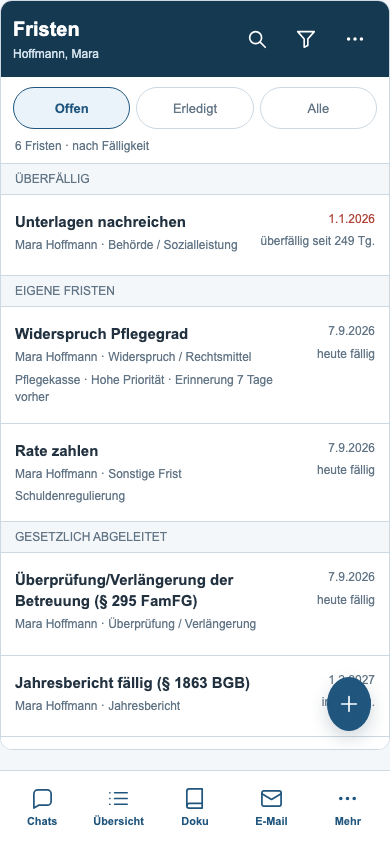
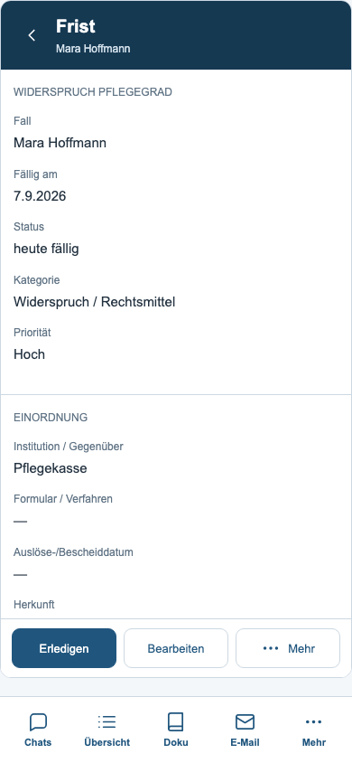
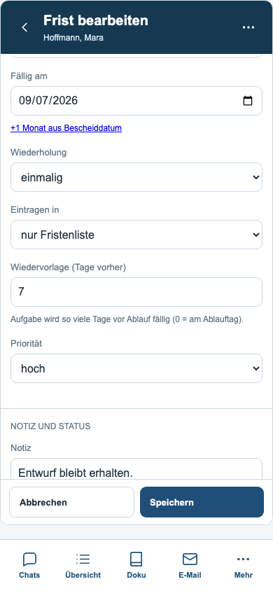
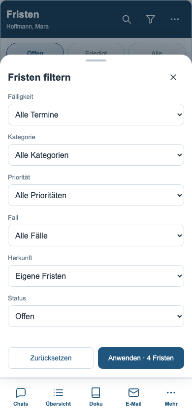
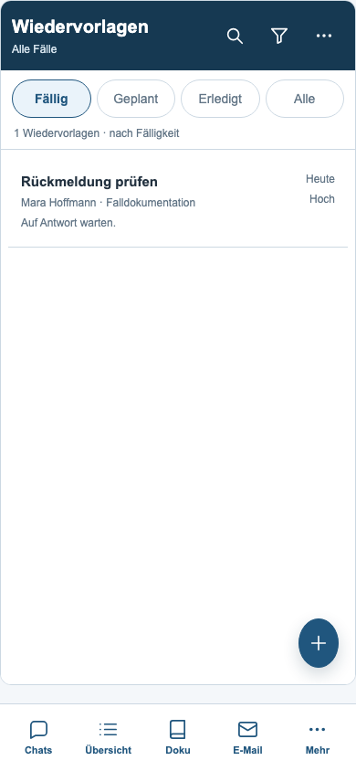
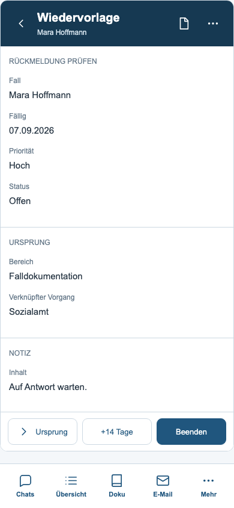
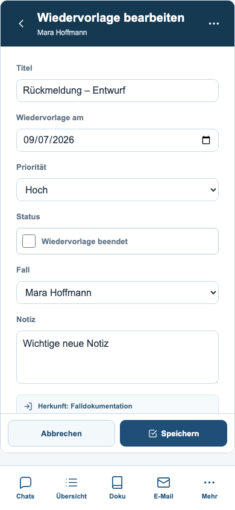
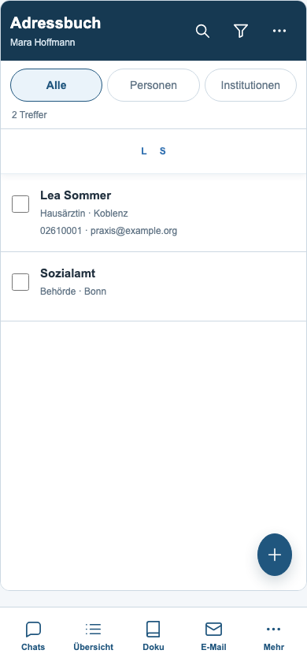
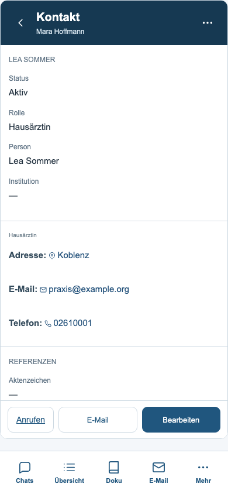
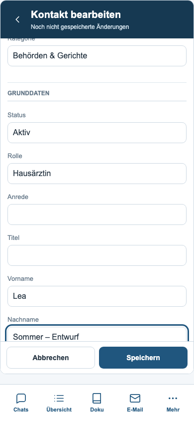
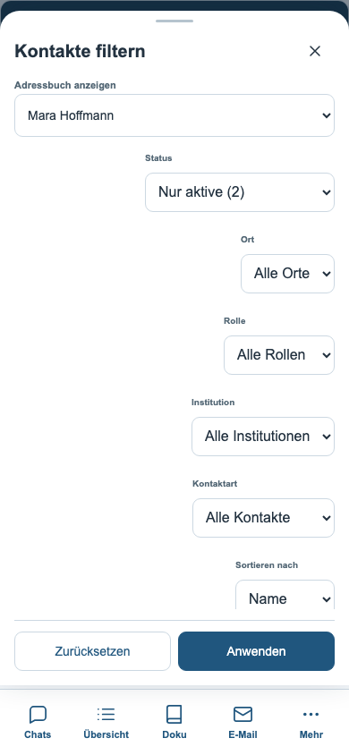
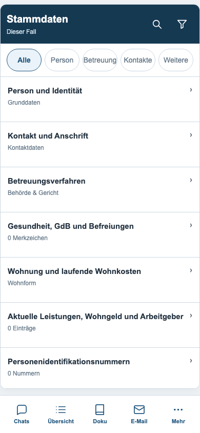
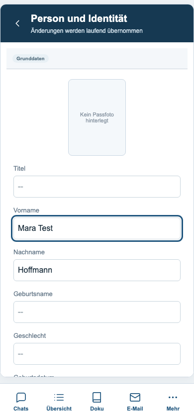